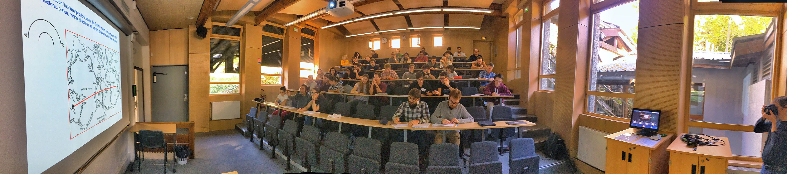

The school
The school will combine formal classes, hands-on tutorials, round-table discussions and research seminars on the structure, dynamics and evolution of the Earth interior. It is aimed at PhD students and young researchers.
Program (preliminary)
- Geodynamics: Core dynamics, mantle dynamics, core formation, geo- and palaeomagnetism, geodynamo theory, core-mantle coupling.
- Earth structure seen from its gravity field.
- Seismology: body waves, normal modes and surface waves, inverse problem theory, seismic tomography, structure near the core-mantle boundary.
- Mineral physics: Crystal structure, deformation mechanisms, ab initio calculations, physical properties of the core and mantle.
- Geochemistry: heterogeneity of the mantle, evolution of the Earth, core formation, magma ocean processes.
The school will primarily be in english
Multi-disciplinary discussions
- Rheology.
- Mixing and heterogeneities.
- Open science: community-led journal, community codes, open data.
Presentations by participants
- Two sessions of short presentations by all participants will be organised.
- All participants are encouraged to bring poster, preferably in portrait format to fit the poster boards.
Confirmed lecturers
- Thierry Alboussière (U. Lyon)
- Maëlis Arnould (U. Lyon)
- Frédéric Chambat (U. Lyon)
- Gaël Choblet (U. Nantes)
- Sylvie Demouchy (U. Montpellier)
- Fanny Garel (U. Montpellier)
- Stéphane Labrosse (ENS de Lyon)
- Maylis Landeau (Institut de Physique du Globe de Paris)
- Ludovic Margerin (U. Toulouse)
- Jean-Paul Montagner (Institut de Physique du Globe de Paris)
- Guillaume Morard (U. Grenoble Alpes)
- Henri-Claude Nataf (U. Grenoble Alpes)
- Isabelle Panet (Institut Géographique National)
- Bruno Reynard (ENS de Lyon)
- Yanick Ricard (ENS de Lyon)
- Barbara Romanowicz (UC Berkeley, Collège de France)
- Séverine Rosat (U. Strasbourg)
- Nathanaël Schaeffer (U. Grenoble Alpes)
- Andrea Tommasi (U Montpellier)
Reseach seminars (in progress)
- Thierry Alboussière - ‘Anisodyne’, an anisotropic dynamo.
- Gaël Choblet - The dynamics of oceans buried under ice layers in the external solar system.
- Stéphane Labrosse (with A. Morison and G Choblet) - Convection in Sputnik Planitia, Pluto.
- Ludovic Margerin - Application of multi-diffusion to InSight data.
- Séverine Rosat - Inner-core free oscillations: an observational challenge.
Scientific committee
- Stéphane Labrosse, ENS de Lyon, France.
- Barbara Romanowicz, UC Berkeley and Collège de France.
Application
Owing to COVID-19 restrictions, the number of participants is limited to 25 (39 including lecturers). Candidates must send mail to S. Labrosse (stephane.labrosse (at) ens-lyon.fr) and B. Romanowicz (barbara.romanowicz (a) college-de-france.fr ) stating:
- Lastname, firstname
- Number of years in PhD or postdoc
- Primary field (e.g. geodynamics, mineral physics, seismology etc.)
- Subject of PhD or postdoc project
Each candidate must also ask their advisor to send us a short support letter.
Application deadline: June 7, 2021
The housing and food is covered by our sponsors: Labex LIO and CNRS.
Practical informations
- Arrival: The school will start by an opening seminar by Henri-Claude Nataf on Monday 5th at 5pm. We will be hosted onsite starting at 2pm.
- Departure will be on Friday 16th after lunch.
- Getting there: detailed informations are available on the school website. It is possible to walk from the Les Houches train station to the school, but may not be very practical with luggages. Taxis can be reserved by the school secretary, Isabel Lelievre: houches-secretariat@univ-grenoble-alpes.fr.
COVID-19 regulations
- All participants are asked to bring a negative test dating less that 72 hours. Both PCR and antigen tests are accepted. This is required even for participants that are already vaccinated.
- A self-test will be performed on Tuesday 6th.
- Wearing masks will be required inside buildings.
- Weather permiting, meals, coffee breaks, poster discussions will be held outside.
Location
Les Houches school of Physics is located in Les Houches, at the entrance of the Chamonix valley, at the foot of the Mont-Blanc, in the French Alps. It offers all necessary facilities, with a lecture room (70 seats, see image by Ed Garnero), several rooms for group working, internet access, a restaurant and chalets for housing. Check the school website for more details.
